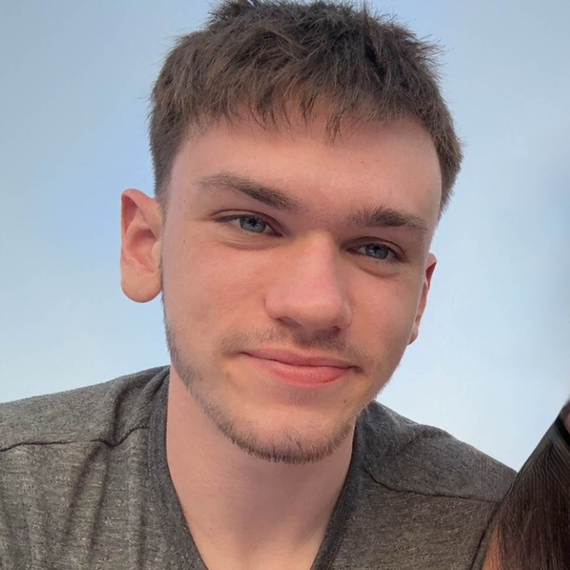

Columbus, OH
Michael Blevins
Aspiring astrophysicist, software developer, and data scientist applying computational tools and emerging technologies to develop novel, innovative solutions to complex problems.
ABOUT
I am a passionate and determined aspiring scientist eager to apply my computational skill set and analytical thinking to cutting-edge research. During my time as a student at The Ohio State University, I developed excellent capability in astronomical data analysis as well as a deep understanding of the underlying statistics, providing me with the framework to succeed in my future endeavors as I work towards becoming an astronomer.
MY GOAL
My goal is to contribute to pushing the frontier of our understanding of the universe, whether through astronomical research, scientific communication and outreach, or supporting scientists in various ways, such as processing and archiving data, aiding in software pipeline development, or running observations with astronomical equipment.
How I'm Working to Achieve My Goal
- Working on projects to apply, enhance, and expand my skillset to increase my versatility as a scientist.
- Continuing my learning independently through lectures on modern astronomical research practices and working through interactive textbooks in Jupyter
- Getting involved. Attending science talks, participating in clubs/societies, reaching out and making connections with people in the field.
PROJECTS
I have worked on two main projects: "Unsupervised Discovery of Galactic Substructures and Anomalies in the JWST COSMOS-Web Survey" and "Machine Learning for Dwarf Satellite Detection". These are both independent/course-based projects that I worked on during my time as a student at The Ohio State University.
Unsupervised Discovery of Galactic Substructures and Anomalies in the JWST COSMOS-Web Survey
• Developed an automated clustering pipeline using Python to analyze high-dimensional tabular data for over 80,000 galaxies, successfully identifying peculiar substructures without labeled training data
• Engineered a feature space combining photometric, structural, and physical parameters (e.g., stellar mass, metallicity) to characterize complex distributions in astronomical data
• Identified novel data anomalies, including metal-poor starbursts and rare dwarf galaxies, by interpreting cluster physical fingerprints via Z-score heatmaps
• Detected algorithmic bias, revealing that geometric features (orientation/inclination) were overpowering physical features in morphological classifications
Machine Learning for Dwarf Satellite Detection
• Developed a binary classifier to identify rare dwarf satellite galaxies in the SAGA Survey DR3, utilizing cross-modal embeddings and a training set of photometrically indistinguishable background sources to capture morphological features beyond standard photometric data
• Applied dimensionality reduction techniques and trained a logistic regression model, optimizing the decision threshold to achieve 95% recall to maximize the recovery of potential candidates for scientific follow-up
DATA ANALYSIS & MACHINE LEARNING
- Bayesian Statistics
- Linear/Logistic Regression
- Neural Networks (MLP, Convolutional, Bayesian, Siamese)
- Dimensionality Reduction
- Clustering Algorithms
- Agentic LLMs
- Retrieval Augmented Generation (RAG)
LINKS
Check out my GitHub and connect with me on LinkedIn!